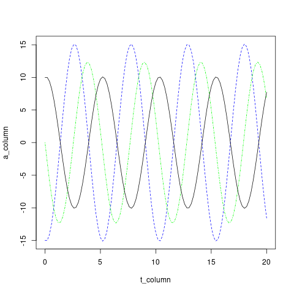

Notes for Class
Table of Contents
1 Homework Springs
1.1 Example Spreadsheet
1.2 Example Code
1.2.1 R
#Spring oscillator #Let t be time, s be position wrt equilibrium, v be velocity, a be acceleration and p be a constant where a = -ps(t) t <- 0 t_column <- c() s <- 10 s_column <- c() v <- 0 v_column <- c() p <- 1.5 a <- -1*p*s a_column <- c() #loop while (t < 20){ t_column<-c(t_column,t) t <- t+0.2 s_column<-c(s_column,s) s <- s+(v*0.2) a_column<-c(a_column,a) a <- -1*p*s v_column<-c(v_column,v) v <- v+(a*0.2) } print(t_column) print(s_column) print(a_column) print(v_column) plot(t_column,a_column,type = "l",lty = 2,col="blue") lines(t_column,v_column,lty = 4,col="green") lines(t_column,s_column,lty = 1,col = "black")

1.2.2 Python
- Harmonic Oscillator
P = -10 Q = -2 dt = 0.05 s = 1 vInit = 0.0 t = [0.0] dist = [s] veloc = [vInit] accel = [P*s] for n in range(1,150): accel.append(dist[-1]*P) veloc.append(accel[-1]*dt + veloc[-1]) dist.append(veloc[-1]*dt + dist[-1]) t.append(n * dt) import matplotlib matplotlib.use('SVG') import matplotlib.pyplot as p fig = p.figure(figsize=(3,3)) p.plot(t,dist) p.savefig('./pyH.svg') return './pyH.svg'
- Damped Oscillator
P = -10 Q = -2 dt = 0.05 s = 1 vInit = 0.0 t = [0.0] dist = [s] veloc = [vInit] #accel = [P*s] accel = [P*s + Q*veloc[-1]] for n in range(1,150): #accel.append(dist[-1]*P) accel.append(dist[-1]*P + veloc[-1]*Q) veloc.append(accel[-1]*dt + veloc[-1]) dist.append(veloc[-1]*dt + dist[-1]) t.append(n * dt) import matplotlib matplotlib.use('SVG') import matplotlib.pyplot as p fig = p.figure(figsize=(3,3)) p.plot(t,dist) p.savefig('./pyD.svg') return './pyD.svg'
1.2.3 Racket (a lisp dialect)
#+Include "./springRacket.rkt
2 Github Update
- Fork/Clone
- Set upstream for tracking changes
- Merging
- Branches
- Committing and Pushing
- Pull Request
3 Integrate and Fire Neurons
3.1 General Background
- What is an action potential?
- What electrolyte provides the resting potential? Why?
- What explains the action potential? Why?
- Repolarization? How?
- How does this relate to the computing metaphor?
- What is the difference between a "rate" code and a "timing" code?
3.2 Circuit Background
Divide into groups:
- Present Ohm's Law. What is it? Where did it come from?
- Present Kirchoff's Law. What is it? Where did it come from?
- Present the notation of electrical circuits. How can we include these in Word and LaTeX documents?
- What is a capacitance? What is a resistance/conductance? How is resistance affected by being in parallel or in series?
- What is the history (pdf) of the integrate and fire neuron model? Early uses? Why is it called, what it is? Integrate and Fire?
- Why is this circuit stuff relevant to the I&F neuron?
3.3 Build the Model
The formula for the voltage of the model is:
\begin{equation} \tau \frac{dV(t)}{dt} = RI(t) - V(t) \end{equation}3.3.1 Preliminaries and questions:
- What is R?
- What is tau?
- What might you choose as their values to get going?
- How do you use this formula to plot the time varying voltage of the neuron?
- If you could solve this formula analytically what mathematical "friend" do you think you would find and why?
- Does this model have a refractory period? Should it? If it doesn't, can you give it one?
3.4 Spreadsheet Example
Link to Spreadsheet
4 Hodgkin-Huxley
Link to org file
5 Assignment
TBD